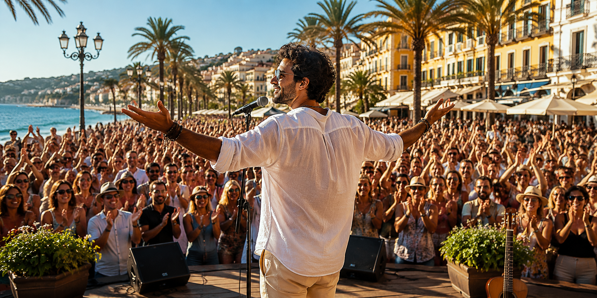

Welkom in de wereld van Juan Solé Juan Solé neemt je mee naar warmere sferen, mediterrane klanken en adembenemende zonsondergangen. Zijn muziek is een uitnodiging om even te ontsnappen aan de drukte van alledag en je onder te dompelen in de ontspannen levensstijl van de Middellandse Zee. Zijn liedjes vertellen verhalen over vakanties, zon, zee en strand. Over levendige boulevardjes, sfeervolle pleinen, verborgen baaitjes en lange zomeravonden waarop de tijd lijkt stil te staan. Het zijn verhalen over genieten van alles wat de mediterrane kust te bieden heeft: de muziek, de cultuur, de mensen en de bijzondere momenten die je voor altijd bijblijven. Als een rode draad loopt de liefde door al zijn nummers. De onbezonnen verliefdheid van twintigers die samen hun eerste vakantie beleven. De passie van geliefden die elkaar telkens opnieuw weten te vinden. En de rust en warmte van pensionado's die hun dromen najagen en het leven vieren onder de Spaanse zon. Met een unieke mix van moderne Latin-pop, mediterrane invloeden en warme melodieën creëert Juan Solé een herkenbare, tijdloze sound. Muziek die je niet alleen hoort, maar voelt. Muziek die herinneringen oproept en nieuwe herinneringen creëert. Sluit je ogen, voel de zon op je gezicht en laat je meevoeren door de wereld van Juan Solé. Waar elke song klinkt als een vakantie en elke melodie smaakt naar een eindeloze zomer.

Muziek en Vakantie
Juan Solé is geboren in Malaga, Zuid Spanje, nog niet zo heel lang geleden. Tijdens een vakantie in Andalusië onstond het idee om de prachtige songs die kwamen uit de ideeén en handen van Jan van der Kuijl, uit te brengen en er een project van te maken. Deels om te kijken hoe ver het kan komen en deels om te kijken hoe de wereld er op reageert. De muziek van Juan Solé is een ode aan het mediterrane leven. Elke song neemt je mee naar zonovergoten stranden, sfeervolle pleinen, gezellige boulevardjes en lange zomeravonden waarop de tijd even stil lijkt te staan.
Artificial Intelegence
Juan Solé is een virtuele artiest die tot leven komt dankzij moderne AI-technologie en menselijke creativiteit. Achter iedere release schuilt een combinatie van muzikale ideeën, verhalen, compositie, productie en artistieke keuzes. AI is daarbij een hulpmiddel, maar de inspiratie, de sfeer en de emoties komen voort uit een duidelijke artistieke visie. Het doel is niet om technologie centraal te zetten, maar om muziek te maken die mensen raakt. Muziek die herinneringen oproept, nieuwe verhalen vertelt en je even laat wegdromen naar warmere oorden..
Optredens
Omdat Juan Solé een virtuele artiest is, zullen er geen liveoptredens of concerten plaatsvinden. Zijn podium is de wereld van streaming, video's en sociale media. Dat betekent juist dat alle aandacht kan uitgaan naar nieuwe muziek, nieuwe verhalen en nieuwe bestemmingen. Regelmatig verschijnen er nieuwe nummers die je meenemen naar een andere plek aan de Middellandse Zee, met telkens weer een nieuwe sfeer, een nieuw verhaal en een nieuw stukje zomer.
Een herkenbare identiteit
Wie is Juan Solé?
Juan Solé is een volledig digitale artiest, ontstaan uit een combinatie van menselijke creativiteit en moderne AI-technologie. Hij bestaat niet in de fysieke wereld, maar zijn muziek, uitstraling en verhalen vormen samen een herkenbare artistieke identiteit die voortdurend verder groeit. Juan Solé is meer dan alleen muziek. Iedere foto, videoclip, albumcover en socialmedia-post maakt deel uit van dezelfde wereld. Daardoor ontstaat een herkenbare stijl waarin muziek, fotografie en kunst elkaar versterken. Achter ieder nummer schuilt een idee, een herinnering of een gevoel. Soms is dat een zonsondergang aan de Middellandse Zee, een wandeling door Sevilla of een ontmoeting in een sfeervol Spaans dorp. Die inspiratie vormt de basis voor iedere nieuwe productie. De muziek van Juan Solé ademt de sfeer van Andalusië. Zon, zee, witte dorpjes, flamenco, tapas, terrassen en warme zomeravonden vormen de inspiratie voor een groot deel van zijn repertoire. Hoewel de mediterrane sfeer altijd aanwezig is, beperkt Juan Solé zich niet tot één genre. Van rustige ballads en loungemuziek tot latin, deep house en zomerse dance: iedere productie krijgt de stijl die het verhaal het beste ondersteunt.


Veel gestelde vragen
Op welke streamingdiensten is Juan Solé te beluisteren?
Nieuwe releases verschijnen op de bekende streamingplatforms, waaronder Spotify, Apple Music, YouTube Music, Amazon Music en vele andere diensten..
Komen er regelmatig nieuwe nummers?
Ja. Juan Solé is een voortdurend groeiend project. Regelmatig verschijnen nieuwe singles, videoclips, foto's en verhalen die de wereld van Juan Solé verder uitbreiden.
Waarom lijken Juan Solé en Lucía Marín altijd hetzelfde
Hun uiterlijk is bewust vastgelegd. Daardoor blijven zij in iedere afbeelding, videoclip en albumcover direct herkenbaar. Die consistente stijl is een belangrijk onderdeel van hun identiteit.
Waarom wordt AI gebruikt?
Omdat het nieuwe creatieve mogelijkheden biedt. Dankzij AI kunnen muziek, beeld en verhalen op een unieke manier samenkomen. Het doel is niet om technologie centraal te stellen, maar om een herkenbare artiest en een geloofwaardige wereld te creëren waarin iedere nieuwe productie voortbouwt op dezelfde identiteit.